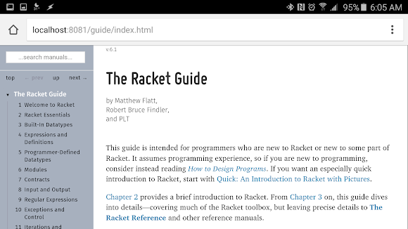
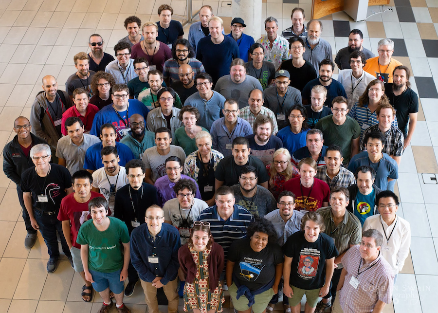
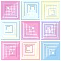
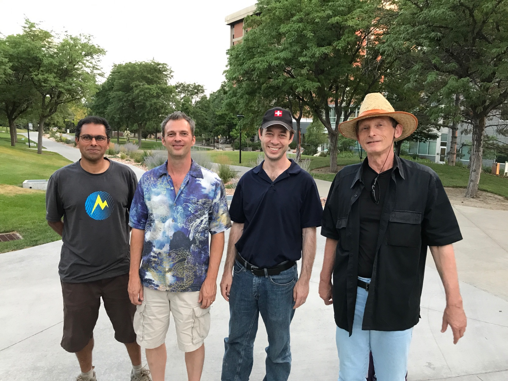
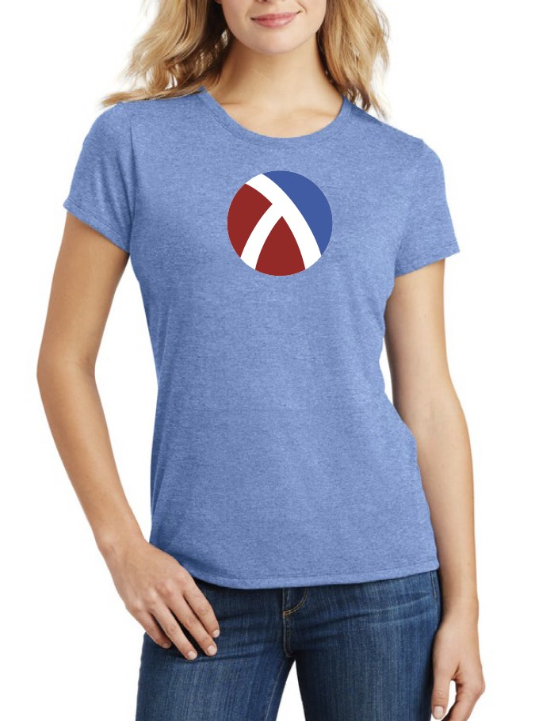

Racket version 8.9 is available.
RacketCon 2023 is October 28-29 in Chicago
#lang racket/gui
(define my-language 'English)
(define translations
#hash([Chinese . "你好 世界"]
[English . "Hello world"]
[French . "Bonjour le monde"]
[German . "Hallo Welt"]
[Greek . "Γειά σου, κόσμε"]
[Portuguese . "Olá mundo"]
[Spanish . "Hola mundo"]
[Thai . "สวัสดีชาวโลก"]
[Turkish . "Merhaba Dünya"]))(define my-hello-world
(hash-ref translations my-language
"hello world"))(message-box "" my-hello-world)
Racket is a mature and stable product. From the beginning, it has supported cross-platform graphical programming (Windows, macOS, Linux).
Racket includes a rich set of libraries, covering the full range from web server apps to mathematics and scientific simulation software.
In Racket, programmers define their own loops with powerful macros. Indeed, these macros are so powerful that programmers make entire domain-specific languages as libraries. No tools, no Makefiles required.
Racket is the first language to support higher-order software contracts and safe gradual typing. Programmers can easily deploy these tools to harden their software.
Racket comes with support for major editors. The main bundle includes an innovative and extensible interactive development environment that has inspired other IDE projects.
#lang racket
(provide time-it)
(require (for-syntax syntax/parse))
(define-syntax (time-it stx)
(syntax-parse stx
[(_ task)
#'(thunk-time-it (λ () task))]))(define (thunk-time-it task)
(define before (cim))
(define answer (task))
(define delta (- (cim) before))
(printf "time: ~a ms\n" delta)
answer)(define cim current-inexact-milliseconds)
Racket allows programmers to add new syntactic constructs in the same way that other languages permit the formulation of procedures, methods, or classes. All you need to do is formulate a simple rule that rewrites a custom syntax to a Racket expression or definition.
Little macros can particularly help programmers with DRY where other features can’t. The example
#lang racket/gui
;; let's play a guessing game
(define frame (new frame% [label "Guess"]))
(define secret (random 5))
(define ((check i) btn evt)
(define found? (if (= i secret) "Yes" "No"))
(message-box "?" found?)
(when (= i secret)
(send frame show #false)))(for ([i (in-range 5)])
(new button%
[label (~a i)]
[parent frame]
[callback (check i)]))(send frame show #t)
Racket comes with a comprehensive suite of libraries: a cross-platform GUI toolbox, a web server, and more. Thousands of additional packages are a single command away: 3D graphics, a bluetooth socket connector, color maps, data structures, educational software, games, a quantum-random number generator, scientific simulations, web script testing, and many more.
Macros work with these tools. The example
Getting to know the full Racket macro system will feel liberating, empowering, dazzling—like a whole new level of enlightenment. Developers can easily create a collection of co-operating macros to implement algebraic pattern matching, simple event-handling, or a logic-constraint solver.
While Racket is a functional language, it has offered a sub-language of classes and objects, mixins and traits, from the beginning. The macro-based implementation of a Java-like class system lives in a library and does not need any support from the core language. A Racket programmer can thus combine functional with object-oriented components as needed.
Some languages convey ideas more easily than others. And some programming languages convey solutions better than others. Therefore Racket is a language for making languages, so that a programmer can write every module in a well-suited language.
Often an application domain comes with several languages. When you need a new language, you make it—on the fly. Open an IDE window; create a language right there, with just a few keystrokes; and run a module in this new language in a second IDE window. Making new languages really requires no setup, no project files, no external tools, no nothing.
Racket comes with its own IDE, DrRacket (née DrScheme), and it sports some unique features. For example, when a programmer mouses over an identifier, the IDE draws an arrow back to where it was defined.
A programmer immediately benefits from DrRacket while using an alternative language, say Typed Racket. Racket macros, even complex ones and those used to make new languages, record and propagate a sufficient amount of source information for DrRacket to act as if it understood the features of the new language.
Racket programmers usually love parentheses, but they have empathy for those who need commas and braces. Hence, building languages with conventional surface syntax, like that of datalog, is almost as easy as building parenthetical languages.
Racket’s ecosystem comes with parsing packages that allow developers to easily map any syntax to a parenthesized language, which is then compiled to ordinary Racket with the help of Racket’s macro system. Such a language can also exploit the hooks of the IDE framework, so that its programmers may take advantage of Racket’s IDE.
Tutorials & Documentation
|  |
Community
Discourse and Discord Slack (sign up), IRC, Reddit, and Mailing lists Mastodon, Twitter, and Blog Wiki and YouTube Team and Contributing Friendly Environment Policy Software Freedom Conservancy |  |
Books
Realm of Racket Beautiful Racket Server: Racket |  |
Education
The Racket Summer School Program by Design (aka TeachScheme!) Bootstrap |  |
Swag Racket T-Shirts — the perfect way to meet friends, influence people, and stay warm. Racket Stickers — the indispensable accessory for laptops and textbooks. |  |